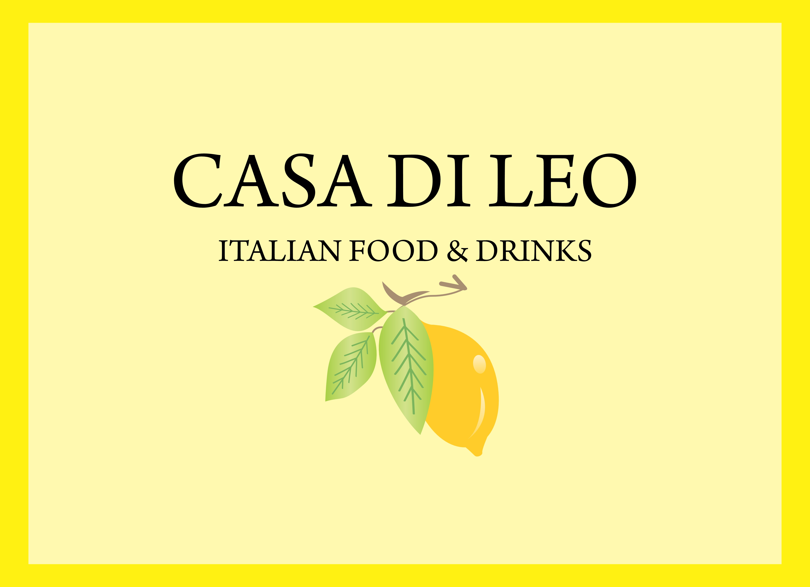

Tagliolini al Limone
Frische Tagliolini mit cremiger Zitronensauce, Parmesan, Butter und Zitronenzeste.
ITALIAN FOOD & DRINKS · BERLIN-GRÜNAU
Italienische Küche, neapolitanische Pizza und besondere Drinks – frisch zubereitet in Grünau.

BENVENUTIAus unserer Küche
Frische Tagliolini mit cremiger Zitronensauce, Parmesan, Butter und Zitronenzeste.
Fior di Latte, Burrata, Prosciutto di Parma, Rucola, Pistazien und Zitronenzeste.
Hausgemachtes Zitronen-Tiramisù mit Mascarpone, Lemon Curd und Zitronenzeste.
WIR FREUEN UNS AUF SIE